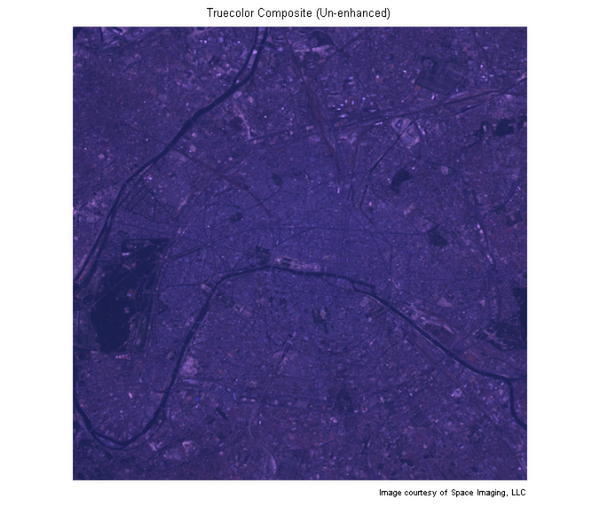
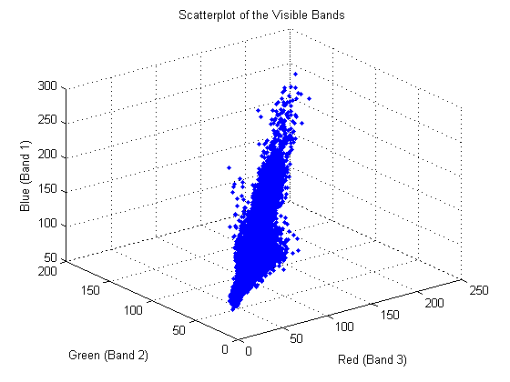
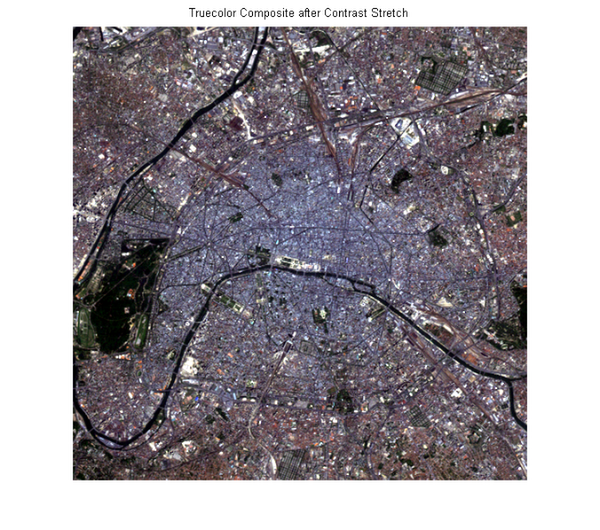
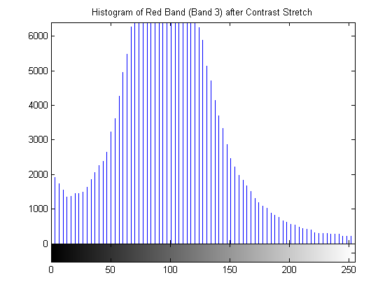
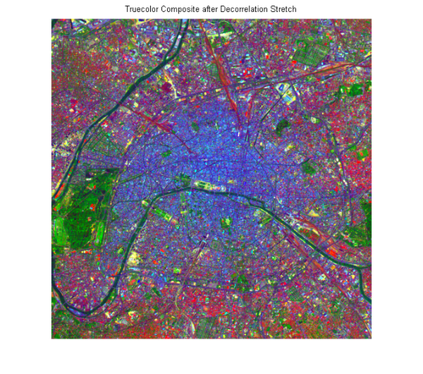
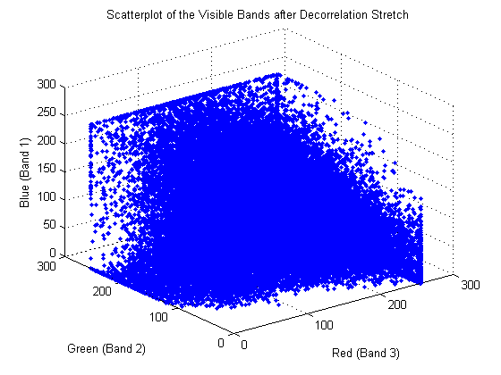
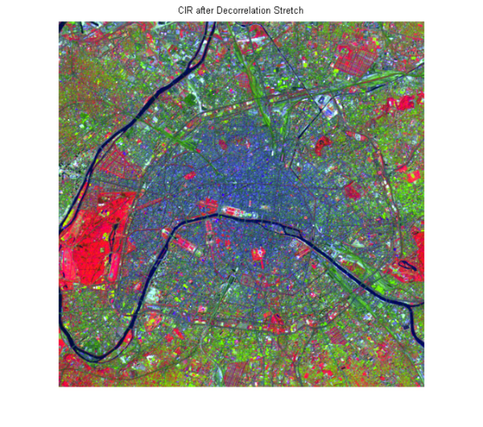

複数のスペクトルのカラー合成イメージの強調
視覚的な解釈のために適切なイメージを作成するために、複数のスペクトルの輝度、あるいは反射データを強調する必要な場合があります。
この例は、複数のスペクトル データを使用していくつかの基本的なイメージの合成と強調方法を説明します。フランスのパリの一部を網羅する Landsat Thematic Mapper イメージを使用します。7 つのスペクトルバンドは Erdas LAN 形式の 1 つのファイルに格納されます。ここで説明する概念は以下のとおりです。
- Erdas LAN 形式のファイルからの複数のスペクトル データの読み込み
- 異なる帯域の組み合わせからのカラー合成の作成
- コントラストのストレッチによるイメージの強調
- 無相関ストレッチによるイメージの強調
- 散布図の使用
目次
手順 1:複数のスペクトル イメージからのトゥルーカラー合成イメージの作成
LAN ファイル paris.lan には、7 帯域の 512×512 の Landsat イメージが含まれています。128 バイトのヘッダーにはピクセル値が続きます。これは、帯域番号の昇順のライン挟み込みバンド並び (BIL) です。リトルエンディアンの順番で符号なし 8 ビット整数として保存されます。
MATLAB® 関数 multibandread を使用して LAN ファイルから帯域 3、2、および 1 を読み込みます。これらの帯域は、スペクトルの可視部分を対象とします。それぞれが RGB イメージである赤、緑、および青の平面にマッピングされる場合、その結果は標準のトゥルーカラー合成イメージになります。multibandread への最後の入力引数では、読み取る帯域と、その順序を指定します。そのため、1 ステップで RGB 合成イメージを構築できます。
truecolor = multibandread('paris.lan', [512, 512, 7], 'uint8=>uint8', ... 128, 'bil', 'ieee-le', {'Band','Direct',[3 2 1]});
トゥルーカラー合成イメージにはわずかなコントラストしかなく、色は一致していません。
figure imshow(truecolor); title('Truecolor Composite (Un-enhanced)') text(size(truecolor,2), size(truecolor,1) + 15,... 'Image courtesy of Space Imaging, LLC',... 'FontSize', 7, 'HorizontalAlignment', 'right')
手順 2:ヒストグラムを使用した非強化トゥルーカラー合成イメージの調査
赤い帯域のヒストグラムを表示すると、たとえば、使用可能なダイナミック レンジの一部分内にデータが集中することがわかります。これは、トゥルーカラー合成イメージが暗く見える理由の 1 つです。
figure
imhist(truecolor(:,:,1))
title('Histogram of the Red Band (Band 3)')

手順 3:相関を使用した非強化トゥルーカラー合成イメージの調査
合成イメージが暗く見えるもう 1 つの理由は、可視帯域が互いに高い相関を持っていることです。2 および 3 帯域の散布図は、スペクトル帯間の相関度合を測定するための有効な方法です。plot を使用することで簡単に行うことができます。
r = truecolor(:,:,1); g = truecolor(:,:,2); b = truecolor(:,:,3); figure plot3(r(:),g(:),b(:),'.') grid('on') xlabel('Red (Band 3)') ylabel('Green (Band 2)') zlabel('Blue (Band 1)') title('Scatterplot of the Visible Bands')
赤-緑-青の散布図の明白な線形トレンドは、可視帯域に高い相関があることを示しています。これは、非強化トゥルーカラー合成イメージの単色表示を説明するのに役立ちます。
手順 4:コントラストのストレッチによるトゥルーカラー合成イメージの強化
imadjust を使用して線形コントラストのストレッチをトゥルーカラー合成イメージに適用すると、表面の特徴をより認識しやすくなります。
stretched_truecolor = imadjust(truecolor,stretchlim(truecolor));
figure
imshow(stretched_truecolor)
title('Truecolor Composite after Contrast Stretch')
 手順 5:コントラストのストレッチ後のヒストグラムのチェック
コントラストのストレッチの適用後、赤い帯域のヒストグラムは、より大きな使用可能なダイナミック レンジにデータが広がっていることを示します。
figure
imhist(stretched_truecolor(:,:,1))
title('Histogram of Red Band (Band 3) after Contrast Stretch')
 手順 6:無相関ストレッチによるトゥルーカラー合成イメージの強化
トゥルーカラー合成イメージを強化するもう 1 つの方法は、無相関ストレッチを使用することです。これは、高い相関があるチャンネルの全域にわたって色の分離を強化します。decorrstretch を使用して、無相関ストレッチを実行します (その後に、オプションのパラメーター値の組みである 'Tol' と 0.1 で指定したように、線形コントラストのストレッチが続きます)。
decorrstretched_truecolor = decorrstretch(truecolor, 'Tol', 0.01); figure imshow(decorrstretched_truecolor) title('Truecolor Composite after Decorrelation Stretch')
再び、表面の特徴はより明確に観測できるようになりますが、方法が異なります。表示全域のスペクトル差異が誇張されます。注目すべき例は、左端の緑の領域です。これはコントラストのストレッチが行われた合成イメージでは黒く見えます。この緑の領域は、ブーローニュの森です。パリの西端にある大きな公園です。
手順 7:無相関ストレッチ後の相関のチェック
予想されるとおり、無相関ストレッチが後に続く散布図は、相関における急激な減少を示します。
r = decorrstretched_truecolor(:,:,1); g = decorrstretched_truecolor(:,:,2); b = decorrstretched_truecolor(:,:,3); figure plot3(r(:),g(:),b(:),'.') grid('on') xlabel('Red (Band 3)') ylabel('Green (Band 2)') zlabel('Blue (Band 1)') title('Scatterplot of the Visible Bands after Decorrelation Stretch')
手順 8:CIR 合成イメージの構成と強化
可視帯域と同じように、スペクトルの不可視帯域を対象とする Landsat 帯域からの情報は、RGB 合成イメージを構成して強化することによって参照できます。この部分のスペクトルにおけるクロロフィルの高反射率のため、近赤外線 (NIR) 帯域 (帯域 4) は重要です。そして、可視赤色光と緑色光 (それぞれ帯域 3 と 2) を結合し、カラー赤外 (CIR) 合成イメージを形成する場合は、特に役立ちます。カラー赤外 (CIR) 合成イメージは通常、植生を特定するか、または植生の成長や状態を評価する場合に使用されます。
元の LAN ファイルから読み込み、帯域 4、3、および 2 をそれぞれ、赤、緑、青にマッピングする RGB イメージを構成することで、CIR 合成イメージを構築します。
CIR = multibandread('paris.lan', [512, 512, 7], 'uint8=>uint8', ... 128, 'bil', 'ieee-le', {'Band','Direct',[4 3 2]});
たとえ、近赤外線 (NIR) 帯域 (帯域 4) が、互いに相関している可視帯域に比べて、可視帯域とあまり相関していなくても、無相関ストレッチは多くの特徴を見やすくします。
stretched_CIR = decorrstretch(CIR, 'Tol', 0.01); figure imshow(stretched_CIR) title('CIR after Decorrelation Stretch')
カラー赤外合成イメージの特性は、植生 (クロロフィル) 密度が高い領域で赤く見えることです。CIR 合成イメージでは、ブーローニュの森公園は赤く見えることに注意してください。これは、無相関ストレッチが行われたトゥルーカラー合成イメージにおける緑の表示と一致します。
decorrstretch、imhist、imadjust、multibandread、stretchlim も参照してください。